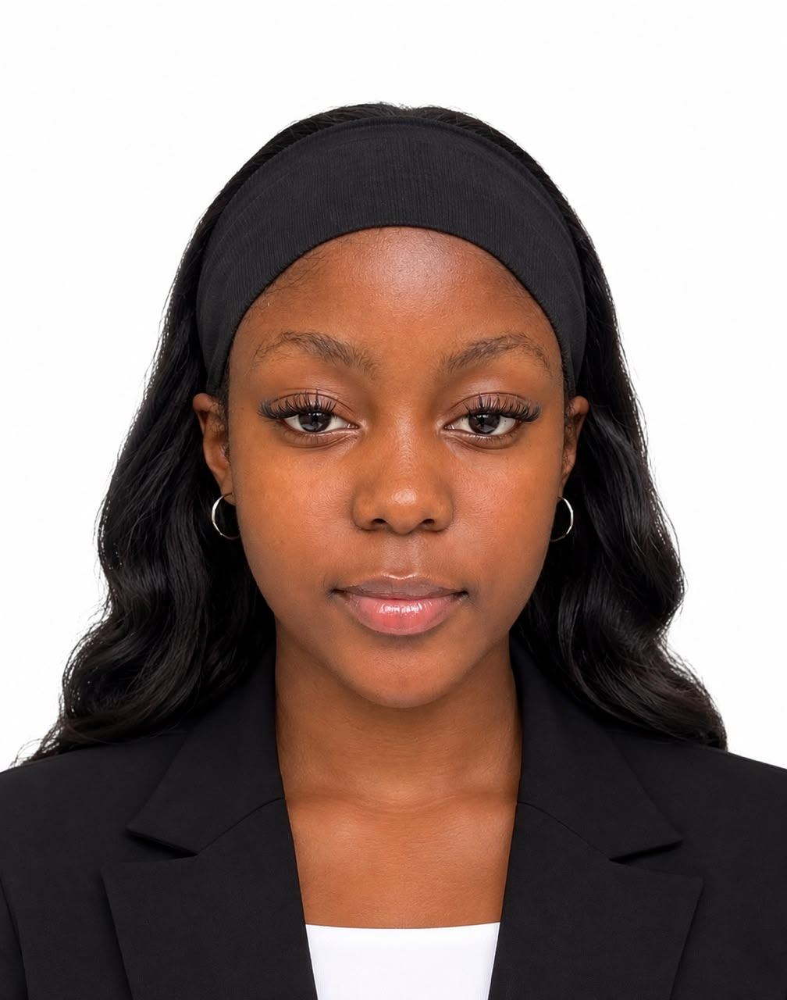

Team Building
Working collaboratively and supporting shared goals.
BA (Hons) Sociology · Student Portfolio
Exploring society, understanding people, and creating meaningful change.

Student · Researcher · Community-mindedI am a Sociology student at Lovely Professional University, Punjab, India, passionate about understanding people, communities and the social structures that shape everyday life.
My academic journey has allowed me to explore social issues, human relationships, community development and human rights. I am developing skills in communication, research, teamwork, social analysis and critical thinking that I hope to use in a career focused on people and positive social change.
My practical experience includes an internship with the Zimbabwe Human Rights Commission, where I gained exposure to the promotion and protection of human rights in Zimbabwe. I have also supported community activities at Guru Nanak Mission Nertaheen Bridh Ashram.
UNDERGRADUATE STUDENT
Punjab, India
ADVANCED LEVEL
Working collaboratively and supporting shared goals.
Good communication skills in academic and professional settings.
Shona and English.
Document preparation and formatting.
Working with information and spreadsheets.
Creating and presenting academic material.
An interest in communication and digital storytelling.
Practical exposure through human-rights experience.
A place to showcase your university assignments, research and projects.
Add Sociology assignments and written coursework.
Prompt: title · course · date · description · fileShowcase research topics, methods and findings.
Prompt: question · method · findings · reflectionAdd classroom presentations and seminars.
Prompt: topic · audience · key message · slidesPresent social case studies and analysis.
Prompt: issue · analysis · recommendationsHighlight practical Sociology projects.
Prompt: goal · role · outcome · evidenceKeep adding new work as you progress.
Prompt: add new academic work here.INTERNSHIP
Gained practical experience as an intern, contributing to the promotion and protection of human rights in Zimbabwe.
COMMUNITY SERVICE
Assisted with cleaning the environment and offering daily services to elderly people at the Ashram.
FEATURED ARTICLE
Young women play an important role in building stronger, healthier and more sustainable communities. They bring creativity, new ideas, leadership and energy to community development.
Although young women may face challenges such as limited access to resources, education and leadership opportunities, their contribution can make a significant difference.
One important role of young women is education and awareness. Young women can educate others about issues such as health, gender equality, environmental protection and the importance of education. Through social media, schools, community organisations and other platforms, they can share information and encourage positive changes.
Young women also contribute through entrepreneurship and employment creation. By starting small businesses and developing skills, they can become financially independent while creating opportunities for other members of the community. For example, young women can establish businesses in areas such as beauty, fashion, agriculture, technology and food production.
Another important role is community leadership. Young women can participate in student organisations, youth groups, NGOs and community projects. Their involvement in decision-making allows the needs and ideas of young people and women to be represented. Leadership also gives young women the opportunity to become role models for younger girls.
Young women can also contribute to social change and volunteering. They can participate in activities such as supporting vulnerable people, helping during disasters, organising clean-up campaigns and promoting education. These activities strengthen cooperation and encourage people to work together to solve community problems.
Technology has also created new opportunities for young women to contribute to development. Through social media and digital platforms, they can raise awareness about social issues, organise campaigns, promote businesses and connect with people beyond their immediate communities.
Young women are not only beneficiaries of community development; they are also agents of change. When young women have access to education, skills, resources and leadership opportunities, they can contribute meaningfully to the development of their communities. Investing in young women means investing in stronger communities and a better future.
Add your certificates, awards and achievements here.
My CV is part of this website. Visitors can view it directly below or download the PDF.
Download CVFor academic collaborations, professional opportunities and portfolio enquiries.